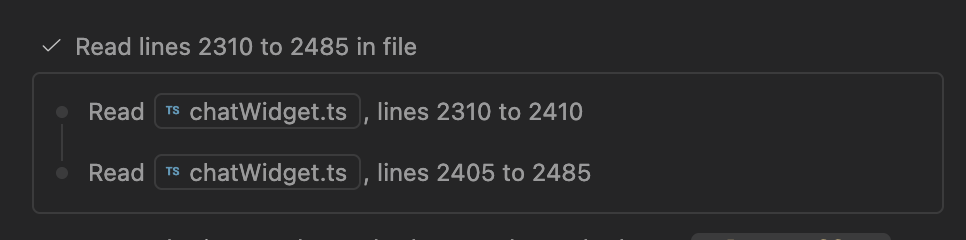

1. 先回答这次的问题
工具与思考过程常被压缩，但“默认折叠”不是统一行为。 已核实的模式包括：工具详情收起、按视图密度隐藏、连续过程分组合并、完成后转为摘要，以及临时连接状态完成后消失。不能把它们都记成一个“是”。
证据最完整的是 Claude Code 桌面视图、VS Code 的工具配置，以及 WorkBuddy 的执行与 MCP 连接过程。Cursor 有明确的三档工具密度文档。DeepSeek Harness 的官方更新说明证明其有折叠工具卡与推理展开交互，但本轮未独立验证默认值。Codex App 和历史 Windsurf 的默认开合暂不能下确定结论。
DevEco 的推荐方向：当前动作可见、成功详情按需展开、最终结果常驻；等待授权和失败保持可操作。 这是设计建议，不是七款产品已经一致采用的规则。
研究边界
- 本轮为公开官方文档、更新日志和官方配图研究，没有登录七款产品执行同一任务。
- 官方配图可以证明某个画面存在，不能单独证明初始默认值或从生成中到完成的自动转换。
- 既有分析页中的源码结论作为历史材料保留；本报告未复现其源码检查，不把其中的像素尺寸和默认设置升级为新证据。
- 日期是资料访问日期；没有客户端版本号的结论只对所链接文档负责。
- 未验证的动画、流式输出节奏、默认密度、滚动锚定统一写“待实测”。
2. 把会话拆成可比较的基本单元
| 基本单元 | 用户需要知道什么 | 不能混淆的对象 |
|---|---|---|
| 思考 / 推理展示 | 是否仍在处理；是否理解正确 | 推理强度选择、推理摘要、可展示思考文本不是同一个功能 |
| 计划 / 待办 | 准备做什么、做到哪一步 | 计划不是完整思考，也不是执行成功凭证 |
| 工具调用 | 对什么对象做什么操作 | 调用参数、运行状态、调用结果应分开 |
| 工具结果 | 成功还是失败、输出是什么 | 工具执行成功不代表任务目标已达成 |
| 文件修改 | 哪些文件、改动规模与 diff | 对话中的说明不等于实际 diff |
| 验证结果 | 运行了什么、哪些通过或失败 | 未执行、执行失败、测试不通过是三种状态 |
| 授权请求 | 哪个动作正在等我、影响范围 | 与一般进度行分开，等待不能伪装成运行 |
| 最终答复 / 产物 | 做成了什么、如何验收、还有什么未完成 | 不应随过程组一起被隐藏 |
“深度思考”在本报告指可见的推理相关单元，不推断模型内部推理过程，也不以思考正文长度评价能力。
三层折叠 + 一个生命周期问题
| 层级 | 示例 | 研究字段 |
|---|---|---|
| L1 单次调用详情 | 一行“读取文件”，点开查看内容 | 默认开合、摘要字段、点击区域 |
| L2 连续步骤组 | 多次读取合并为一组 | 分组边界、标题、子步骤入口 |
| L3 整轮过程 | 一轮任务的过程收为一个入口 | 保留哪些结果、失败是否露出 |
| 生命周期 | 生成中显示，完成后摘要化或移除 | 自动变化触发时机、用户手动展开是否保留 |
3. 七产品总表
“文档确认”不代表本轮实机观察；“待实测”不等于产品不支持。
| 产品 / 客户端 | 思考单元 | 工具过程与展开方式 | 生成中 | 生成后 | 默认折叠结论 |
|---|---|---|---|---|---|
| Codex App | 本轮没有足够直接 UI 证据 | 官方协议区分命令、文件变更、MCP 等条目，不能推出实际样式 | 协议支持开始和增量事件 | 协议支持完成状态和最终输出 | App 待实测；不沿用 CLI 结论 [S1] |
| Claude Code 桌面 Code 页 | Thinking / Verbose 视图可显示 | Normal / Thinking 中工具压缩为摘要；Verbose 展示每步 | 文档明确可以边执行边停止或补充指令 | 视图策略适用于 transcript；未证实完成瞬间是否另有收起动画 | Normal 中工具详情折叠；初始选中模式待实测 [S2] |
| Claude Code 终端（同一产品的补充端） | 需区分普通对话与 transcript | Ctrl+O 打开详情；文档列出 MCP 多次调用合并摘要 | 具体各工具流式预览待实测 | 可回查详细执行记录 | 部分默认合并已确认，不能推断所有工具 [S3] |
| DeepSeek Harness Web / Desktop | 更新日志提及推理展开与标题吸顶 | 官方日志明确存在可折叠工具卡 | 准备阶段可显示命令描述、路径和生成进度 | 收起卡内可直接访问 fetched URL | 支持折叠已确认，初始默认值待实测 [S4] |
| WorkBuddy 桌面 | 文档未明确独立思考单元；不能判定“没有” | 执行阶段说明、摘要、可展开中间步骤 | 阶段与消耗；MCP 连接计数 | MCP 加载过程不保留历史；不能类推所有工具过程 | 中间步骤可展开；通用默认策略未明确 [S5] |
| Cursor Agents Window（3.4 功能） | 本轮未确认思考默认开合 | Compact / Balanced / Detailed 三档控制工具过程密度 | 运行与结束的逐项差异待实测 | 档位控制会话可见信息量 | 密度可配置，默认选中档未核实 [S6] |
| Windsurf / Cascade | 公开文档不能确认独立思考呈现 | 现有文档确认 Todo、工具调用与 checkpoint | 长任务可在会话显示 Todo | 通过 checkpoint 回查/恢复；不证明过程折叠 | 历史 Windsurf 默认开合待核查；原 URL 已跳转 Devin Desktop [S7] |
| VS Code Copilot Agent | 可用折叠 reasoning 区域；受设置影响 | 工具详情默认折叠，分组可配置 | 特定 persistent progress 模式下工具运行时保持可见 | Compact 模式在回答恢复/结束时把完成组改成可展开摘要；Verbose 保留 | 工具详情默认折叠已确认；整轮不能一概而论 [S8][S9] |
4. 逐产品：生成中、生成后与可借鉴点
4.1 Codex：先分清 App、CLI 和事件协议
官方 App Server 文档把 reasoning、命令执行、文件变更与 MCP 调用建成不同条目，配有 started / completed 和增量事件；命令还具有退出码、耗时等字段。它说明状态可以被结构化表达，不证明 App 默认如何折叠。[S1]
| 关注点 | 本轮结论 |
|---|---|
| 生成中 | 协议能表达开始、命令输出增量与推理摘要增量；实际 App 的状态行与预览待实测 |
| 生成后 | 协议区分最终条目状态；App 是否保留思考入口待实测 |
| 默认折叠 | 不将既有页对 CLI 的 transcript-only、输出预览行数、快捷键结论移植到 App |
| 展开详情 | 输入、输出、退出状态与变更是有价值的信息层次；实际入口待补图 |
对 DevEco 的启发（设计推论）：先定义条目状态及关联 ID，再设计折叠。这样“收起”只改变呈现，执行记录与验收证据仍能回查。缺图，见 [S1]。
4.2 Claude Code：思考可见度和工具密度是两个选择
桌面版文档列出 Normal、Thinking、Verbose 三种 transcript 视图：Normal 保留完整文本答复并将工具压为摘要；Thinking 在工具摘要之外显示思考；Verbose 展示完整工具与中间步骤。通过会话菜单或 Ctrl+O 切换。[S2]
这说明“显示思考”不必同时“展开所有工具”。生成中可停止或补充指令，但文档不足以确认流式思考如何裁切，以及完成瞬间是否自动收起。终端版的 Ctrl+O 查看器还会展开部分默认合并的行，例如多次 MCP 调用摘要。[S3]
对 DevEco 的启发（设计推论）：提供普通查阅和诊断查阅，让开发者按任务切换信息量；不要让用户逐个点开几十条记录才能排障。缺图，见 [S2][S3]。本报告不宣称三档中的某档是所有安装环境的初始默认值。
4.3 DeepSeek Harness：折叠存在，但插件改变行为
已确认对象为官方 deepseek-ai/deepseek-harness，不是 DeepSeek 普通聊天网页。官方 README 说明其处于 developer preview，采用插件架构。[S10]
官方发布记录提到：工具准备时显示已有参数信息；工具卡收起时可以直接打开已获取页面的链接；展开的推理标题支持吸顶。它们证明过程有渐进展示与折叠能力，但不能独立证明所有模式的初始开合或整轮收起时机。[S4]
社区 dsh-trace-collapse 插件明确提供最终输出出现后自动收起过程，并保留最终答案。这是插件作者对其插件的说明，不是官方核心默认行为。[S11]
对 DevEco 的启发（设计推论）：收起状态仍可携带文件/网页的直达入口；研究记录必须同时记下插件与配置，否则两个用户看到不同界面时容易误判。缺图，见 [S4][S10][S11]。
4.4 WorkBuddy：阶段状态与结果并行，临时进度可以退出历史
官方文档说明对话内呈现阶段、摘要和可展开中间步骤；MCP 连接中展示完成计数，全部就绪后该临时进度从历史流移除。[S5]
图 W1｜官方文档配图，未标客户端版本。能看到阶段说明、经过时间和写入文件状态；不能由静态图推断动效或最终折叠。它是通用任务示例，不是本轮编码任务实测。
图 W2｜连接数量是可辨识的等待反馈。完成后移除的规则来自文字文档，不是由这张图推测。图片中的蓝圈为官方配图标注，不是产品焦点样式。
对 DevEco 的启发（设计推论）：可以让一次性环境准备状态退出主对话，但命令执行、文件变更和测试结果应保留审计入口。文档没写独立思考单元，不能因此断言它不存在，也不能认定计划卡等同思考。
4.5 Cursor：密度成为会话层的控制项
Cursor 3.4（2026-05-13）的 Agents Window 更新提供三种工具密度：Compact 以简短结果为主，Balanced 包含重要中间过程，Detailed 提供接近完整的步骤上下文。“接近完整”不能改写成“所有工具都默认展开”。[S6]
生成中的活动行、完成后的自动合并、思考单元开合仍需指定版本与档位补测。当前证据支持“可控制信息量”，不支持推断默认选中 Balanced，也不支持把 Agents Window 与所有 IDE 面板、CLI 画面等同。
对 DevEco 的启发（设计推论）：密度最好作用于整段过程，而非改写日志；生成后仍可切档复核。缺图，见 [S6]。
4.6 Windsurf / Cascade：计划是显式进度，折叠仍需版本证据
原 Windsurf Cascade 文档已重定向到 Devin Desktop，页面描述 Todo、工具与 checkpoint。它支持把计划和具体动作分别呈现，但不足以证明历史 Windsurf 的工具详情默认开合。[S7]
对 DevEco 的启发（设计推论）：计划可回答“下一步是什么”；命令与测试回答“这一步做成没有”。需要分别保留这两种证据。历史客户端的思考样式、折叠策略和当前客户端是否一致仍待实测。缺图，见 [S7]。
4.7 GitHub Copilot / VS Code：把默认与实验配置明确分开
工具文档明确工具详情默认折叠，可展开查看调用与输出，连续调用的分组方式能通过配置改变。[S8]

图 V1｜2025-12 发布的 1.107 历史配图。当前图中组内两条读取记录处于可见状态，展示的是分组结构；“连续调用默认折叠”的结论来自该版本文字说明，而不是图中的当前展开状态。[S12]
现行文档进一步区分 persistent progress：启用时工具运行中保持可见；Compact 会在文本回答恢复或响应结束时，将完成组转为可展开摘要；Verbose 保留详情。该功能是实验配置，Stable 与 Insiders 的默认行为及实验推送可能不同。[S9]
对 DevEco 的启发（设计推论）：测试自动折叠时必须记录“何时触发”和“用户选了什么模式”。单凭一张完成截图无法判断产品有没有在运行中展示详情。
5. 同一编码场景下，用户需要的四层证据
以下是面向 DevEco 的任务旅程分析，非七产品同场景实测结果。
| 旅程行 | 理解代码 | 修改代码 | 构建 / 测试 | 遇阻与验收 |
|---|---|---|---|---|
| 行为 | 搜索符号、读取文件 | 修改相关文件 | 执行命令、读取结果 | 授权、定位失败、核对交付 |
| 界面触点 | 搜索组、读取行、文件直达 | 文件变更行、diff | 命令行、输出、通过/失败摘要 | 待处理卡、错误摘要、最终答复 |
| 情绪 / 摩擦 | 无反馈时怀疑卡住；逐条刷屏难看重点 | 不知道改了几处，担心范围扩大 | “完成”与“测试通过”混淆 | 自动收起可能隐藏待办，重试状态难理解 |
| 机会 | 当前动作可见，完成读取可分组 | 常驻改动数量与 diff 入口 | 摘要写明执行对象与退出状态 | 失败不藏、授权可操作、答案单独保留 |
6. 展示策略的收益与代价
| 策略 | 证据产品 | 收益（推论） | 代价（推论） |
|---|---|---|---|
| 视图分档 | Claude Code、Cursor | 降低逐项展开成本，兼顾普通查阅与诊断 | 切档入口难发现时，用户可能误以为记录丢失 |
| 连续步骤分组 | VS Code 1.107 | 压缩重复读取、搜索，便于跳读 | 标题泛化会掩盖不同文件与失败项 |
| 当前可见、完成摘要 | VS Code 特定配置 | 同时照顾执行监控和结果阅读 | 自动收起引起位移，可能打断正在查看的内容 |
| 临时状态退出历史 | WorkBuddy MCP 连接 | 避免环境准备信息长期占屏 | 若没有诊断记录，后续很难排查连接问题 |
| 插件控制整轮收起 | DSH 社区插件 | 可按个人偏好组织过程 | 环境差异增大，不能以插件行为代表核心产品 |
这些是可观察到的设计策略，不是完整 SWOT 或市场能力排名。本次没有足够数据对产品易用性打分。
7. DevEco 建议：先约定状态，再决定信息密度
7.1 建议的生成中 / 生成后规则
下表是候选交互规格，不描述 DevEco 当前实现。
| 单元 | 生成中 | 生成后 | 默认开合建议 | 应保留的入口 |
|---|---|---|---|---|
| 思考摘要 | 显示处理中状态与可用摘要；没有摘要时不虚构文本 | 留可回查入口；正文不抢占结果区域 | 正文收起 | 查看可展示摘要 |
| 读取 / 搜索 | 当前动作、对象与计数可见 | 连续成功项合并成组 | 详情收起 | 文件、搜索结果和每次调用 |
| 命令执行 | 命令、运行状态、最新输出可见 | 成功显示退出码与结果；失败显示错误摘要 | 成功日志收起，失败摘要常驻 | 完整命令、日志、工作目录 |
| 文件修改 | 文件名、修改中状态 | 文件数、增删规模与 diff 入口 | diff 按需展开 | 查看修改与文件直达 |
| 验证 | 显示实际执行任务 | 分开显示通过、失败、未执行 | 摘要常驻，详情收起 | 测试结果、构建日志 |
| 授权请求 | 明确等待用户，动作与范围完整可见 | 决策后保留简短记录 | 等待中展开 | 允许、拒绝、影响详情 |
| 最终答复 | 独立于工具流逐步呈现 | 保持可读 | 不随过程组收起 | 产物、变更和验证证据 |
7.2 三条优先落地建议
- P0：完成态必须说清做成什么。 摘要至少包含修改对象、验证结果和未完成项。以“测试结束”替代“测试通过”会损害信任。验证：用户能否只读摘要正确判断可以提交还是仍需处理。
- P0：失败和待授权不被成功步骤盖住。 分组标题保留失败数量与待办入口，正在查看的展开内容不因后台事件突然消失。验证：插入一次失败与一次授权，看用户能否找到阻塞动作及原因。
- P1：密度切换与执行数据分离。 普通模式聚焦摘要，诊断模式保留详情；用户手动展开优先于自动收起。验证：切换密度后，调用顺序、日志、文件链接和错误记录均完整。
7.3 结构示意（DevEco 建议，非竞品截图）
生成中
当前：运行 hvigorw assembleHap [停止]
已读取 4 个文件 [查看步骤]
已修改 2 个文件 [查看 diff]
> 编译模块 entry … [日志]
生成后
已完成 · 修改 2 个文件 · 构建通过
实现了列表缓存修复；真机验证尚未执行。
[查看 diff] [构建结果] [展开 7 个过程步骤]
遇阻
等待授权：执行命令 … [允许] [拒绝]
或：构建失败 · 错误摘要 … [日志] [查看原因]
该示意只定义层级，不规定像素、颜色或组件新增。后续应复用仓库现有 AI 单元与状态规范。
8. 后续实测清单与验收标准
| 测试 | 必须采集的画面 | 要回答的问题 |
|---|---|---|
| 连续读取 5 个文件 | 首个动作、连续调用、最终答复 | 是否成组？组内失败会不会隐藏？ |
| 修改 2 个文件并运行测试 | 修改中、测试运行中、测试结束、答复完成 | 哪个事件触发收起？diff 是否常驻？ |
| 需要授权的命令 | 请求出现、展开详情、决定后 | 等待与运行是否容易区分？ |
| 一次命令失败后重试 | 第一次失败、重试中、最终结果 | 历史失败是否保留？最终摘要是否准确？ |
| 手动展开后继续输出 | 展开前后、工具完成、下一轮发送 | 用户展开是否被覆盖？滚动是否跳动？ |
| 切换客户端/密度/插件 | 设置截图与同任务输出 | 默认行为变化是版本、设置还是插件造成？ |
每条实测需记录：客户端版本、系统、模型、密度设置、实验开关、插件、提示词、采集时间。至少采集第一工具开始、最后工具完成、最终答复结束三帧；自动收起的判断需要连续录屏。
9. 来源与图片
以下均访问于 2026-10-19。除注明社区插件外，优先使用官方材料；旧版发布说明仅用于对应版本。
| ID | 来源 | 支持内容 |
|---|---|---|
| S1 | Codex App Server | 条目类型、生命周期与输出字段；不是 App 排版证据 |
| S2 | Claude Code Desktop：Switch view modes | 三种 transcript 视图与工具摘要 |
| S3 | Claude Code Interactive mode | transcript 查看器与部分默认合并行 |
| S4 | DeepSeek Harness Releases | 工具准备信息、折叠卡入口、推理展开交互；跨多个预发布版本 |
| S5 | WorkBuddy 任务对话 | 执行阶段、可展开步骤、MCP 进度与停止入口；W1/W2 来源 |
| S6 | Cursor 3.4：Full-screen Tabs and Compact Chats | 2026-05-13 Agents Window 工具密度 |
| S7 | Cascade Overview → 当前落地页 | Todo / 工具 / checkpoint；不可替代历史 Windsurf 默认值 |
| S8 | VS Code：Use tools with agents | 默认折叠、展开输出和分组配置 |
| S9 | VS Code：Chat preferences | persistent progress、Compact / Verbose、实验默认差异 |
| S10 | DeepSeek Harness 官方仓库 | 项目识别、Web 入口及 developer preview 边界 |
| S11 | dsh-trace-collapse 插件作者仓库 | 社区插件的整轮收起策略，不代表官方默认 |
| S12 | VS Code 1.107 更新 | 连续调用默认折叠的历史说明；V1 配图来源 |
图片留存：W1 images/workbuddy-exec-progress.png；W2 images/workbuddy-mcp-loading.png；V1 images/vscode-1.107-collapsed-tools.png。均为官方文档真实 UI 配图，已逐张查看。图片著作权归各产品方，仅作为研究引用，不作为 DevEco 设计资产。
10. 与已有四产品页面的核查关系
| 已有表述 | 本报告处理 |
|---|---|
| Codex 思考完成后不显示 | 既有来源为 CLI 实现；App 保留待实测，避免跨端外推 |
| WorkBuddy 没有独立思考单元 | 改为“本轮文档未明确”；未观察到不等于不存在 |
| 四家失败与等待都不折 | 证据未覆盖全部状态，不作为行业共识；保留为 DevEco 建议 |
| DeepSeek 默认 detailed、completion / next-input | 既有源码研究未在本轮复现，暂不作为本轮独立验证结论 |
| 四家都默认收起过程 | 拆解到客户端、模式、层级与生命周期，不使用整体断言 |
本文完整覆盖研究问题与设计决策，但视觉证据尚未覆盖七产品全状态；它可以用于方案评审，不能作为七款客户端默认行为的完整实测验收报告。
原四产品结构分析（历史研究，展开查看）
以下保留原页面。跨客户端与默认值的证据边界，以本页七产品报告第 10 节为准。
01 先定义「会话基本单元」
七个单元「思考怎么显示」不是一个组件问题，而是「一次会话被切成哪些块、每块默认给多少」的问题。 先把单元列齐，四家的差异才有地方放。
| 单元 | 它回答什么 | 默认该给多少 | 四家的处理 |
|---|---|---|---|
| U1 你的输入 | 我让它做什么 | 全文，不折 | 四家都是完整气泡或引用行；折叠会让上下文断掉。 |
| U2 思考 | 它有没有理解对、在往哪想 | 一行状态；正文按需 | Codex 完成后不显示；Claude 只留一句；DeepSeek 留首行；WorkBuddy 没有这个单元。 |
| U3 计划 / 待办 | 总共几件事、做到第几件 | 一张卡，可收起 | WorkBuddy 放在最显眼处；DeepSeek 并进过程组；Codex、Claude 有 todo 但不当主单元。 |
| U4 工具调用 | 它做了什么 | 一行：动词 + 对象 | 四家一致。差别只在行尾放什么：耗时、diff 统计、退出码。 |
| U5 工具结果 | 做成了没有、证据是什么 | 一行摘要；正文按需 | Codex 预览 3 行；Claude 1 行；DeepSeek 展开成卡；WorkBuddy 展开 diff。 |
| U6 提问 / 审批 | 哪里要你拍板 | 不折 | 四家都不折。这是唯一「默认必须打断」的单元。 |
| U7 收尾 | 这一轮花了多久、产出什么 | 一行 | Codex 有 Worked for 12s；DeepSeek 整轮一行「用时」；WorkBuddy 任务卡 4/4；Claude 在底部状态位 |
判断「是否默认折叠」，要分三个问题问
- 位置：折的是单个单元（U2 / U4 / U5），还是一段过程（U3 + U4 + U5 打包），还是整轮？
- 时机：生成中就折、完成那一刻折、还是下一句输入才折？
- 入口：行尾箭头、组头、快捷键、设置项——入口越少，越像「不让人看」；入口太多，等于没折。
下面四家的「默认折叠」都写在这三个维度上，不用「折 / 不折」一个词概括。
02 四家总表
只看默认状态这张表只比「第一眼看到什么」，不比像素与配色。四家都能展开；真正的差别是 展开的入口有几个、默认给多少、什么时候收。
| 产品 · 界面 | 思考单元 | 工具调用单元 | 过程整体 | 默认折叠 | 展开去哪 |
|---|---|---|---|---|---|
| Codex CLI终端 · 0.144.6 | 状态行一行「Thinking + 最新一行摘要」；完成后普通视图里没有 | • Running / Ran <cmd> + 末 3 行预览 |
不打包，一步一行；轮末一行 Worked for |
是 单元级 1 行 | Ctrl+T 全量 transcript；F4 展开活动组；Alt+R 原文 |
| Claude Code终端 · 2.1.107 | ✻ Thinking… → thought for Ns；都在底部状态位，不写进对话流；正文默认不出现 |
● Tool(args) + └ 结果一行 |
不打包，一步一行；长输出挂 (ctrl+o to expand) |
是 单元级一行 | Ctrl+O 切 transcript；Ctrl+Shift+B brief 只留结论 |
| DeepSeek HarnessWeb / 桌面 · 0.1.0-rc | 24px「Think + 首行摘要」；生成中显示最新段落首行，右侧渐隐 | 24px「动词 + 路径 / 命令 + diff 统计」，点开是卡 | 生成中「正在运行命令」；完成后整轮一行「用时」，展开才是组头 | 是 行级 24px + 历史轮整组 + 整轮 | 整轮「用时」→ 组头 → 行；四档密度 + 两种时机 |
| WorkBuddy桌面 · 官网截图 | 未见独立思考单元（官方截图与文档）；任务状态里有「规划中」 | 单行「创建 file +N −N ▾」、>_ 命令、预览 URL |
计划卡（n/4）+「进度更新」卡 + 动作行，正文与动作交错 | 一半 动作行折，计划 / 进度卡不折 | 点 ▾ 展 diff；计划卡可收起；产物在右侧结果区 |
先给结论
Codex 最激进：思考不是「折叠」，是「完成后不存在于普通视图」。 Claude 分两层：对话层只留结论与每步一行，证据层（transcript）另开一个视图。 DeepSeek 把折叠做成策略：同一份会话有四档密度、两种折叠时机，用户调的是「给我看多少过程」。 WorkBuddy 换了主单元：不模拟「模型想了什么」，只给「要做几件事、做到第几件、产出了什么」。
03 Codex CLI
思考用另一个视图承载
终端形态的极限做法：对话流只留「我让它做什么」和「它做了什么」，思考只活在生成中的状态行里。
完成后要看思考，得主动开 Ctrl+T。
生成中
生成后
机制与证据
- 思考完成后不进普通视图。记录思考块的字段是
transcript_only: true，意思只在展开的 transcript 里保留已完成的思考块。源码 - 生成中只有一行。状态头取最新一行思考摘要（
latest_summary_line），渲染在底部状态区，不写进对话记录。源码 - 工具预览固定 3 行。
DETAIL_PREVIEW_LINES = 3；没输出时补一行└ (no output)；失败改成Exited (status N)。源码 - 整轮有一行收尾。
Worked for 1m 12s · 10:24，dim，属于FinalMessageSeparator。源码 - 入口是快捷键，不是箭头。Ctrl+T 打开 transcript overlay，F4 聚焦活动组看细节，Alt+R 切原文。源码
04 Claude Code
对话层与证据层，两个密度和 Codex 一样不铺思考正文，但它把「完整过程」做成一个可切换的视图，而不是只藏在快捷键后面： 对话层是检查点，transcript 层是全量。
生成中
生成后
机制与证据
- 思考正文默认关。设置项
showThinkingSummaries的说明是「Show thinking summaries in the transcript view (ctrl+o). Default: false.」源码 - 生成中只给状态。
✻ Thinking…（dim + italic），结束后同一处变thought for Ns；这段文本属于底部 spinner，不进对话流，也不留成可展开的单元。源码 - 每步一行 + 一行结果。工具头
● Tool(args)，下一行└ …；长结果写(ctrl+o to expand)，读文件写Read output (… to expand)。源码 - 两种默认视图。设置项
defaultView：chat（SendUserMessage 检查点）或transcript（完整）；Ctrl+O 切。源码 - brief 模式更狠。开启后模型只能通过
SendUserMessage说话，「text outside it is hidden from their view」；入口 Ctrl+Shift+B。源码
05 DeepSeek Harness
折叠被做成一套策略四家里把「给你看多少过程」说得最明白的一家：单元行固定 24px，过程成组， 生成中平铺，完成后整轮折成一行「用时」；密度与折叠时机都做成设置。
生成中
生成后 · 默认
机制与证据
- 单元行固定 24px。工具行与思考行都是
height: 24px，摘要单行省略；图标 16 + 标题 + 2×2 点 + 摘要。源码 - 思考生成中显示「最新完成段落的首行」。摘要单行 + 右侧
mask-image渐隐；完成后按settledReasoningPreview决定留不留首行。源码 - 生成后有两层入口。整轮先折成一行「用时 1m 12s ⌄」（
TurnProcessNodeView）；展开后是组头「已读取文件、执行了命令并修改了文件」，再展开才是 24px 的行。源码 - 过程组有一句汇总。生成中是「正在读取文件 / 正在运行命令」；收起后由计数拼成「已读取文件、执行了命令并修改了文件」，超过三类用「等」。源码
- 四档密度 × 两种时机。
compact / standard / detailed / verbose；折叠时机completion或next-input；默认detailed：生成中平铺，完成后整轮折成一行「用时」（foldCompletedTurns），展开该行才见到组头。源码 - 展开体有上限。终端卡输出 224px 内滚，diff / read / 搜索结果各有行数上限，不把会话顶走。源码
06 WorkBuddy
计划是主单元面向办公角色的桌面工作台，不模拟「模型怎么想」，而是把「要做几件事、做到第几件」放在最上面。 会话流里正文与动作交错，动作行仍然是一行。
生成中 按文档推断
生成后
机制与证据
- 计划卡在对话流最上面。官方截图里两次出现：完成态的「任务列表 4/4」与之后的「进度更新 4/4」；每项带状态圈 / 勾。截图
- 动作行是一行。「创建 sokoban.html +682 −0 ▾」「创建 2026-03-27.md +8 −0 ▾」；命令是
>_一行的终端，预览是一行链接。截图 - 中间步骤可展开。官方文档原句：「执行中的阶段说明」「可展开查看的中间步骤」；对话区顶部可开右侧详情面板。文档
- 任务级状态。进行中 / 规划中 / 已完成 / 待处理 / 失败 / 已归档；它没有独立的思考单元，只有任务状态「规划中」。文档
- 我们没看到的：独立思考块、整轮用时行。截图为完成态，生成中只有文档描述 + 这张卡片的 1/4 状态。推断
07 折叠发生在三层
位置 · 时机 · 入口四家看起来完全不同，其实都在三个高度上做选择。把这三层分开看，就不会把「思考默认不显示」 和「过程组默认收起」混成同一个决定。
折正文，不折身份。四家都有这一层。
折一段连续过程。DeepSeek 有（组头 + 行）；WorkBuddy 在计划项下挂步骤；Codex / Claude 不打包。
折「这一轮怎么做的」。DeepSeek 折成一行「用时」；Codex 用另一个视图，Claude 用另一个密度。
| 层 | Codex | Claude Code | DeepSeek Harness | WorkBuddy |
|---|---|---|---|---|
| L1 单元 | 命令 1 行 + 3 行预览；思考完成后连行都不留 | 工具 1 行 + 结果 1 行；思考只留一句用时 | 24px 行；展开成 IN/OUT、终端、diff、read 卡 | 动作 1 行 + diff 统计；点 ▾ 展 diff |
| L2 步骤组 | 无组头；F4 才把相邻活动聚起来看 | 无组头；transcript 里按时间顺序全量 | 有：一句汇总 + 组内行；可整组收起 | 计划项可展开挂步骤；动作行散在正文之间 |
| L3 整轮 | 结束后思考不进普通流；轮末 Worked for | chat / transcript 两视图，Ctrl+O 切 | 整轮折成一行「用时」，完成即折或下一句才折，可配 | 计划卡留在原位，不折；产物去右侧 |
时机比位置更容易做错
同样是 L2 折叠，完成即折会在结论刚出现时把过程抽走，人还在对照；下一句才折把「刚才那几步」
留到用户开始下一个问题，代价是会话更长。DeepSeek 把这两个都做成设置（completion / next-input），
说明它认为这不是风格问题，而是使用场景问题。
08 共识与真分歧
五条共识 · 四个分歧把四家放在一起，能抄的其实只有共识；分歧部分没有对错，取决于用户在这段会话里要「验收」还是「围观」。
| 共识 | 四家怎么做 | 为什么成立 |
|---|---|---|
| C1 一屏只有一处「活着」 | Codex 底部状态行、Claude 的 ✻ 行、DeepSeek 组头 shimmer、WorkBuddy 进度卡 | 动效用来回答「还在跑吗」，多了就变成噪音。 |
| C2 工具先给一行 | 没有一家默认铺开命令输出；最长的是 Codex 的 3 行预览 | 人先判断「做的对不对」，再决定要不要看细节。 |
| C3 思考正文默认不给 | Codex 完成后不显示；Claude 默认关；DeepSeek 只留首行；WorkBuddy 没有这个单元 | 思考是审计材料，不是交付物。 |
| C4 降噪靠层级，不靠删除 | 另一个视图 / 另一个密度 / 组头 / 卡片，原文都还在 | 出事时要能回到原话；删掉就不可逆。 |
| C5 失败与等待不折 | Codex Exited (status N)、DeepSeek 错误 / 中断保留摘要、Claude 保留错误行 |
这是唯一必须打断的单元，折叠等于藏事故。 |
四个真分歧
- D1 思考给不给首行。Codex / Claude 不给，DeepSeek 给（可关）。给首行能让人早一点发现「理解错了」，代价是每轮多一行灰字。
- D2 折在单元还是组。Codex / Claude 让每一步独立成行；DeepSeek 先用一句汇总盖住一组。前者便于抽查某一步，后者便于跳读一整轮。
- D3 什么时候折。完成即折（Codex 的思考、DeepSeek 默认）对「看结论」友好；下一句才折（DeepSeek 可配、WorkBuddy 的进度卡）对「边看边核」友好。
- D4 一行里放什么。Codex 放「命令 + 末 3 行」，Claude 放「工具名 + 结果摘要」，DeepSeek / WorkBuddy 放「动词 + 对象 + diff 统计」。放结果量能直接判断影响面，放结果摘要能直接判断成败。
可点的对照：同一段过程，三种密度
按 DeepSeek 的四档密度简化成三档。切换看「同一份会话，只是给多给少」——不是三家产品的截图。
09 落到 DevEco Code
六条可抄 · 两条别抄不新增组件：现有「过程收成一行」、状态机与 AI 色已经够用。要补的是「行里放什么」与「什么时候折」。
| 建议 | 怎么做 | 依据 | 落在哪 |
|---|---|---|---|
| A 一行一个动作，固定 24px | 行内三段：动词 / 对象（可点开文件）/ 结果量（+N −N、耗时、退出码）；摘要单行省略 | DeepSeek 工具行 CSS、WorkBuddy 截图 | 08「过程收成一行」；ai.css 行高 |
| B 思考默认只留一行 | 生成中一行 shimmer + 最新一句；完成后留「用时」或首行；正文进 transcript | Codex / Claude / DeepSeek 三家里两家不给正文 | ai.css 进行态；状态机八态 |
| C 最新轮平铺，历史轮成组 | 生成中平铺；完成后整轮折成一行「用时」，展开后是组头；历史轮同理 | DeepSeek 默认 detailed 策略 |
08 / 31 Agent 工作台 |
| D 折叠时机给两档 | 「完成即折 / 下一句再折」写进设置；默认完成即折，但同一帧接住高度 | DeepSeek 两档；状态页 AC-3 | 状态锚定 · 验收条件 |
| E 展开体设上限 + 内滚 | 终端 / diff / 搜索结果各有封顶，展开不把状态行顶走 | DeepSeek 224px 终端卡；Cline 150–200px | ai.css 面板；终端卡 |
| F 失败 / 在等你 / 被中断不折 | 这三种状态永远保留摘要与入口，颜色只在此时抢注意力 | 四家一致 | 状态机的错误 / 等待态 |
两条别照搬
别把思考全文默认展开。Codex 与 Claude 都不这么做；DeepSeek 也只给首行。开发者要看的是「改哪、为什么改、验过没有」，不是模型的草稿。
别把计划卡做成主单元。WorkBuddy 的计划卡服务于「我不懂代码，只想看进度」；DevEco 的用户要的是 diff、构建结果、真机证据。计划可以有一行，但不该占掉对话流最上面那块。
一条组合建议（不改组件）
L1 行常驻，L2 组头只在历史轮出现，L3 不折整轮。 生成中把「正在跑」留在面板固定行（不是内容末尾），过程行在内容流里长；完成时把这一轮收成一行「用时 + 一句组头」， 再展开才是过程行；结论、diff 与验证结果始终留在流里。要审计时进 transcript，不在对话流里逐块展开。
10 来源与局限
哪些可核 · 哪些待补| 来源 | 用在这一页的哪一条 | 不能证明什么 |
|---|---|---|
openai/codex @ main本机 codex-cli 0.144.6 |
history_cell/messages.rs 的 transcript_only: true；exec_cell/compact.rs 的 3 行预览与 Ran / Running / Exited (status N)；history_cell/separators.rs 的 Worked for；keymap.rs 的 Ctrl+T / F4 / Alt+R。 |
IDE 扩展与桌面端的呈现；动画时长与具体配色。 |
| Claude Code 2.1.107 本机 npm 包 cli.js |
✻ Thinking…、thought for Ns、结果行 └（原字形是一道 L 形折线，本页字体缺字，示意与正文统一用 └）、(ctrl+o to expand)、Read output (… to expand)；showThinkingSummaries 默认 false；defaultView: chat | transcript；Ctrl+O / Ctrl+Shift+B。 |
压缩产物的字符串不等于最终排版；缩进、颜色、行高无法确认；未验证 VS Code 扩展。 |
deepseek-ai/deepseek-harness @ main2026-10-19 克隆 |
ReasoningRow.tsx / ChatGroupSeat.tsx / ToolRow.module.css / presentation-policy.ts / chat-settings.ts：24px 行、过程组、四档密度、两种时机、默认 detailed。 |
rc 版本会变；插件可替换 tool.call.toolview，不同插件下的行可能不同。 |
| Tencent WorkBuddy 官方文档 + 截图 2026-10 抓取 · 未标版本号 |
「可展开查看的中间步骤」；任务状态「规划中 / 进行中 / 已完成 / 待处理 / 失败 / 已归档」；对话截图里的计划卡、创建 file +682 −0 ▾、>_ 命令、预览 URL。 |
闭源、无源码；截图为完成态，「生成中」只有文档描述与计划卡 1/4 状态；未见独立思考单元。 |
| 本仓库 | deveco-intui-kit/src/ai.css 的状态机与 AI 色；analysis/status-anchor 的折叠同帧与高度接住；08 结论先行、31 Agent 工作台。 |
DevEco Code 当前真实呈现——本页只给取舍，不给现状判断。 |
局限：四家都没有逐帧录屏
这一页的「生成中」按源码路径、官方截图与文档重画成结构示意，不是截图。 能确认的是「哪一行在什么时候出现、默认是否折叠、展开入口是什么」； 不能确认的是淡入时长、折叠动画、颜色对比与窄屏回退。真正要对标到像素，每家需要一段带时间轴的录屏， 至少覆盖「第一个工具开始」「最后一个工具结束」「折叠完成」三帧。
待确认（四条）
- Codex 的思考是否完全不可见，还是某个设置能让它回到普通流？当前只确认默认路径写死 transcript-only。
- Claude 的
thought for Ns留在对话流还是只在 transcript？字符串能看到，最终挂在哪个视图未验证。 - WorkBuddy 生成中的计划卡是否逐步打勾，还是整卡刷新？截图只有完成态。
- DeepSeek 的
next-input时机在长会话里是否会让过程停留过久？需要一次真实使用。